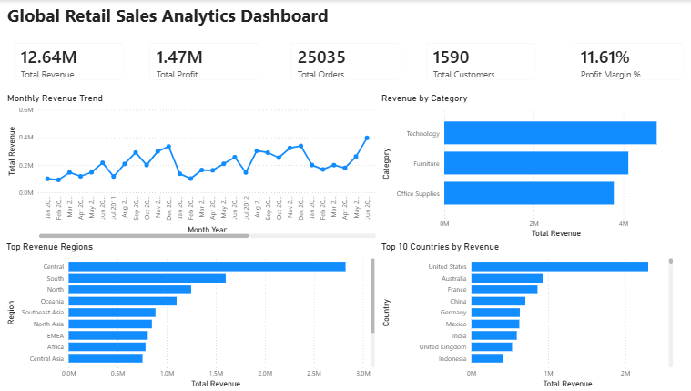
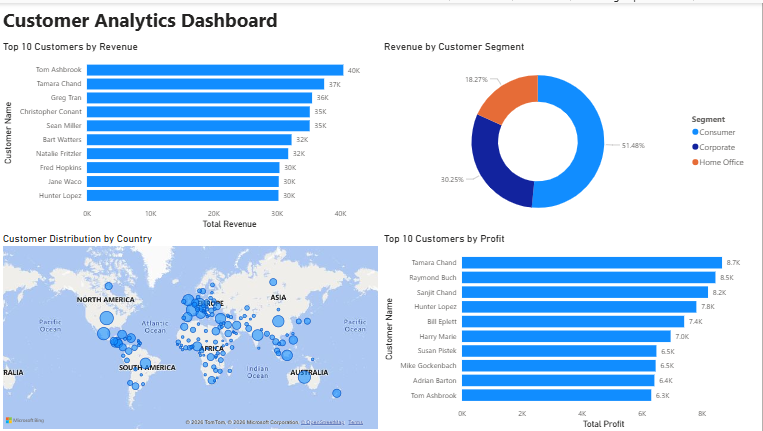
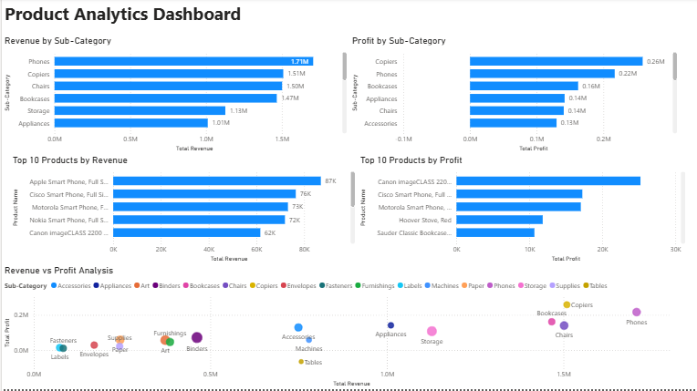
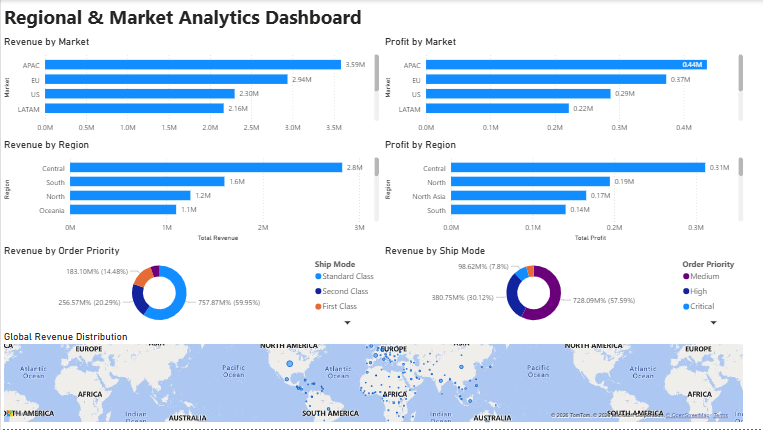
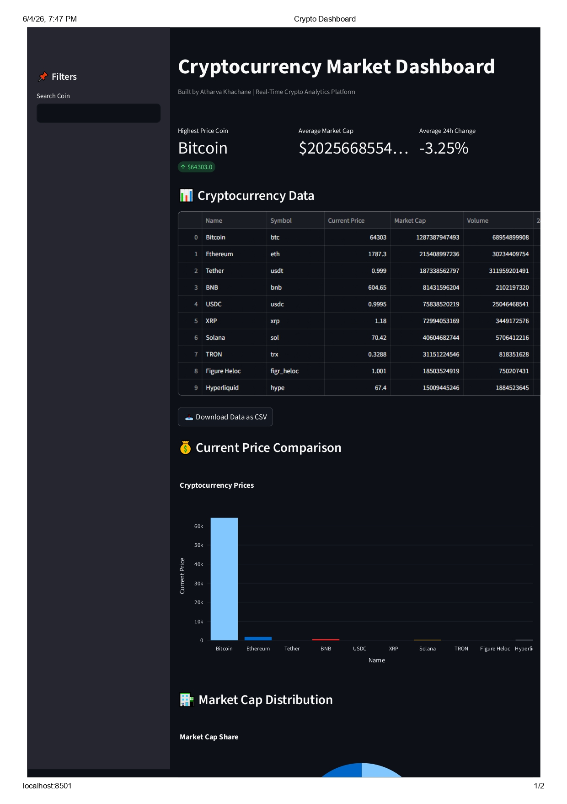
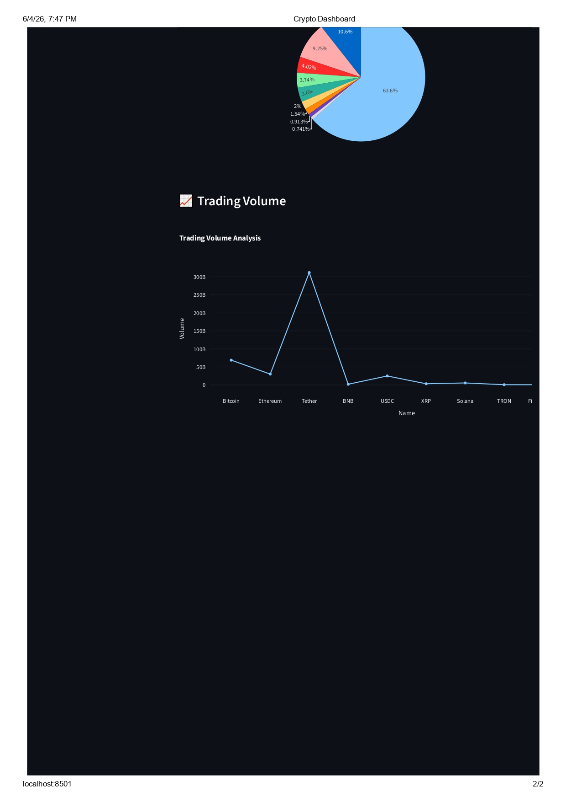

Projects
Customer Churn Analytics Platform
Developed an end-to-end customer churn analytics solution using Python, SQL, Power BI, and Machine Learning to analyze 100,000+ customer records and identify key factors driving customer attrition.
- Performed exploratory data analysis and feature engineering on 100K+ customer records.
- Built a Random Forest churn prediction model achieving 74% prediction accuracy.
- Developed 4 interactive Power BI dashboards covering Executive Overview, Customer Analysis, Churn Drivers, and Retention Strategy.
- Conducted SQL-based customer segmentation, churn analysis, and revenue impact analysis.
- Identified contract type, monthly charges, and tenure as the most significant churn drivers.
- Generated business recommendations to improve customer retention and reduce revenue loss.
Technologies: Python, Pandas, NumPy, SQL, Power BI, Machine Learning, Scikit-Learn

Global Retail Sales Analytics Dashboard
Developed an end-to-end business intelligence solution using Python, MySQL, Power BI and DAX to analyze over 51,000 global retail transactions.
- Analyzed 51,000+ retail transactions across global markets.
- Built 4 interactive dashboards covering Executive, Customer, Product and Regional Analytics.
- Performed SQL analysis, data cleaning and business reporting.
- Created KPI measures for Revenue, Profit and Growth Tracking.
- Identified revenue drivers and high-value customer segments.
Executive Dashboard

Customer Analytics Dashboard

Product Analytics Dashboard

Regional Analytics Dashboard

Technologies Used: Python, SQL, MySQL, Power BI, DAX, Pandas
View GitHub RepositoryCryptocurrency Market Analysis Dashboard
Built a real-time cryptocurrency analytics platform using Python, Streamlit and CoinGecko API.
- Integrated CoinGecko API for live market data.
- Built interactive Streamlit dashboards with KPI cards.
- Implemented Prophet forecasting models.
- Created market capitalization and volume analytics.
- Stored and managed cryptocurrency data using MySQL.
Dashboard Overview

Market Analytics Dashboard

Technologies Used: Python, Streamlit, MySQL, CoinGecko API, Prophet, Plotly
View GitHub RepositoryLive Demo
Sales Performance Dashboard
Designed an interactive Power BI dashboard to monitor revenue, profitability, sales growth and business KPIs.
- Built KPI dashboards using Power BI and DAX.
- Created Revenue, Growth and Profitability measures.
- Implemented drill-through analysis.
- Reduced manual reporting effort through dashboard automation.

Technologies Used: Power BI, DAX, Excel, Data Visualization
View GitHub Repository